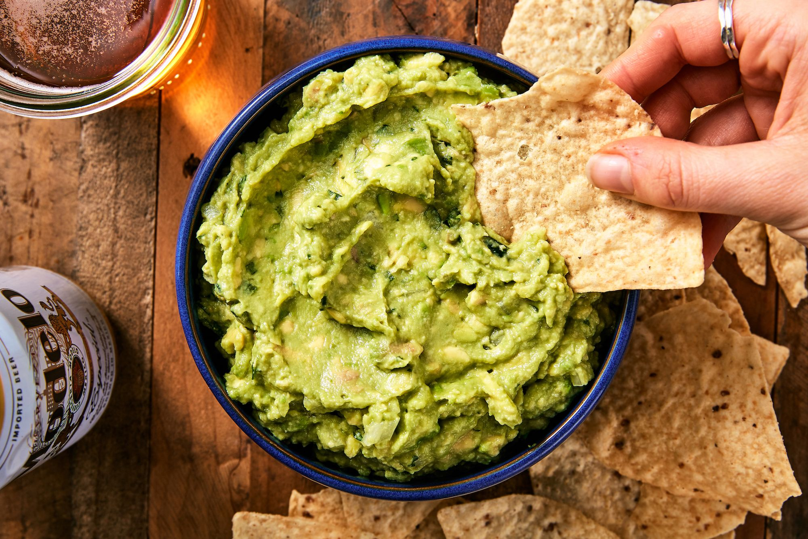

Guacamole Recipe

Ingredients you'll need:
- 3 avocados
- Lime juice
- 1/4c. freshly chopped cilantro
- 1/2 small white onion
- 1 small jalepeno
- 1/2 tsp kosher salt
Recipe:
- In a large bowl, combine avocados, lime juice, cilantro, onion, jalapeño and salt.
- Stir, then slowly turn the bowl as you run a fork through the avocados (this will ensure the mixture stays chunky). Once it's reached your desired consistency, season with more salt if needed. Garnish with more cilantro before serving.